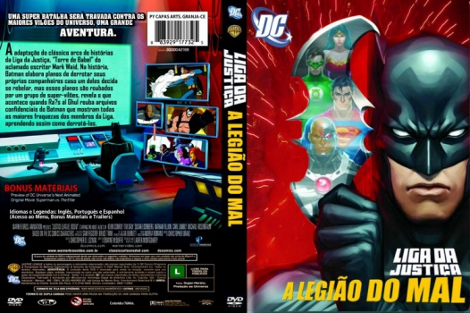

Outro Título:Justice League: Doom
País:United States, 77 minutos
Idiomas falados:Espanhol, Inglês, Português
Gênero(s):Ação, Animação, Sci-Fi, Fantasia
Diretor(s):Lauren Montgomery
Escritor(es):Dwayne McDuffie, Mark Waid
Codec:MPEG-2 (DVD)
Número: 5788


Certificado:12
Sinopse:
A Liga da Justiça enfrenta a maior ameaça de sua história quando um bando de supervilões descobre "planos de emergência" do Cavaleiro das Trevas para deter qualquer membro rebelde da Liga da Justiça para descobrir os pontos fracos secretos de cada um dos super-heróis. Chegou a hora de batalhar pela sobrevivência, quando os planos de emergência são colocados em prática contra todos os membros da Liga da Justiça!
Elenco:


Tipo de mídia: DVD5,
Legendas: Espanhol, Inglês, Português, Sem Legendas
Alugado: Não
Tela: Anamorphic Widescreen